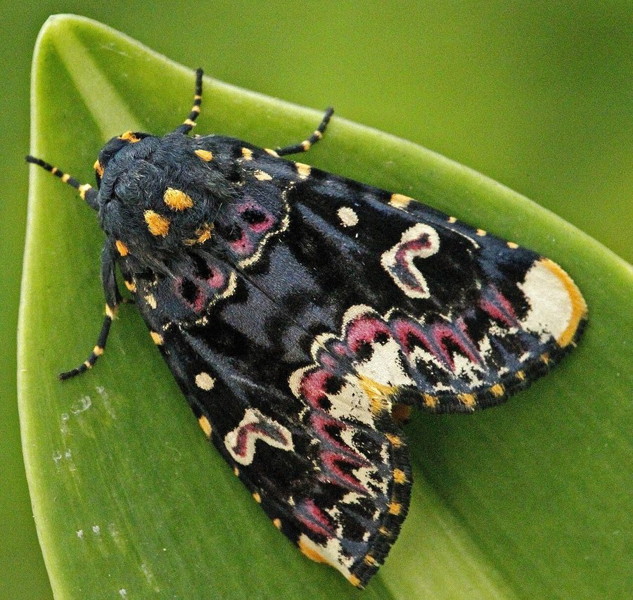

लिली मॉथ पतंगाLily Moth
Polytela gloriosae · Erebidae · INS-0162

- Scientific name वैज्ञानिक नाम
- Polytela gloriosae (Fabricius, 1793)
- Family कुल
- Erebidae
- Hindi हिंदी
- लिली मॉथ पतंगा
- Local names स्थानीय नाम
- lily moth, moth
- Status here यहाँ की स्थिति
- native
- Movement आवागमन
- Resident, here all year
- Known from कहाँ दर्ज
- Others have published records from the wider Awadh–Purvanchal plain, none yet from Basti–Ayodhya अवध–पूर्वांचल से दूसरों के प्रकाशित अभिलेख, बस्ती–अयोध्या से अभी नहीं
- IUCN IUCN
- not evaluated
- Review समीक्षा
- audited and independently read
When to look कब देखें
Present all year. साल भर मौजूद।
Uses and possibilities उपयोग और संभावनाएँ
Drawn from the documented uses in the profile below, where each is labelled traditional, current or a research lead. All uses →
लिली मॉथ पतंगा / Lily Moth
Polytela gloriosae (Fabricius, 1793) — Erebidae
लिली मॉथ पतंगा — गहरी भूरी और सफ़ेद धारियों वाली रात की तितली, नीलकमल या गुलाब के फूल पर देखी जाती है। मुलायम बालों वाला लार्वा बगीचों में दिखता है। बहुत सुंदर तितली है।
Quick Identification त्वरित पहचान
| Feature | Description |
|---|---|
| Wingspan | 28–35 mm |
| Forewing colour | Dark brown to purplish-brown with white or pale bands |
| Hindwing | Pale or whitish; contrast with dark forewing |
| Body | Covered in scales; slender |
| Larva | Somewhat hairy, dark brown or grey; length 18–25 mm |
| Larval behaviour | Solitary feeders on flowering plants |
| Habitat | Gardens, cultivated flowers, open areas |
Field tip: Adults visit flowering plants, particularly lilies (Gloriosa, Lilium spp.), roses, and other ornamental flowers at dusk and night. The caterpillar is found on host leaves, usually solitary. Attracted to artificial lights.
हिंदी — कैसे पहचानें: फूल वाले पौधों पर रात को दिखने वाली गहरी तितली। लार्वा फूलों वाले पौधों के पत्ते खाता है।
Morphology आकारिकी
Biometrics:
| Measurement | Range |
|---|---|
| Adult female wingspan | 30–35 mm |
| Adult male wingspan | 28–32 mm |
| Larva length | 18–25 mm |
| Pupa length | 15–18 mm |
Adult: Medium-sized, nocturnal moth. Forewings dark brown or purplish-brown with transverse white or pale yellow bands; hindwings pale, often whitish or cream-coloured, creating strong contrast. Body covered in scales; relatively slender compared to other erebid genera.
Larva: Moderately hairy, brown to greyish, with a more uniform colour than woolly bears. Body segments well-defined. Head dark. Feeds openly on host foliage.
Pupa: Brown, relatively smooth; formed in loose cocoon or soil.
हिंदी: गहरी तितली, सफ़ेद लकीरें, सुंदर। लार्वा मुलायम बालों वाला, भूरा-राख़ी रंग।
Behaviour & Ecology व्यवहार और पारिस्थितिकी
The Lily Moth is a common nocturnal species of tropical and subtropical gardens, orchards, and open habitats. Adults are attracted to artificial lights and also visit flowering plants at dusk to feed on nectar. Females lay eggs singly on or near host plants; larvae are solitary feeders, developing in 3–4 weeks under warm conditions. Multiple overlapping generations occur throughout the year, with peaks during the monsoon (June–October) and early post-monsoon months. The species shows no migration; it is sedentary and resident. Larvae show a degree of host fidelity but are opportunistic and will feed on a range of flowering plants when preferred hosts are unavailable.
हिंदी: बगीचों और खेतों की तितली। फूलों पर रात को मिठास चूसती है। साल भर तीन से चार पीढ़ियाँ।
Life Cycle / Phenology जीवन चक्र
| Stage | Duration | Notes |
|---|---|---|
| Egg | 4–6 days | Laid singly on or near host leaf |
| Larva | 18–22 days | Solitary; voracious feeder; three to four instars |
| Pupa | 8–10 days | In soil or loose cocoon |
| Adult | 12–18 days | Nocturnal; oviparous |
| Cycle | 35–45 days | Three to four generations April–November in eastern UP |
हिंदी: अंडा 5 दिन, लार्वा 3 हफ़्ते, प्यूपा 10 दिन। साल भर चार पीढ़ियाँ।
Host Plants or Prey आहार
Primary hosts:
- Gloriosa lily (Gloriosa superba)
- Lilium spp. (garden lilies)
- Hibiscus (Hibiscus rosa-sinensis)
Secondary hosts:
- Roses (Rosa spp.)
- Passion fruit (Passiflora spp.)
- Okra (Abelmoschus esculentus)
- Various other ornamental and cultivated plants
Larvae are opportunistic generalists but show preference for lilies and other ornamental flowering plants.
Predators / Natural Enemies शत्रु
- Parasitoid wasps: tachinid and braconid wasps parasitise larvae
- Spiders: hunting spiders and web-builders feed on adults and larvae
- Birds: particularly important in consuming larvae and pupae
- Flies: robber flies capture flying adults
- Ants: prey on young larvae and pupae
Agricultural / Human Relevance कृषि प्रासंगिकता
The Lily Moth larvae occasionally cause minor damage to ornamental flowers in gardens (lilies, roses, hibiscus), but damage is generally light and not economically significant in field crops. Hand-picking of visible caterpillars is sufficient control if needed. The species is not considered a pest in eastern Uttar Pradesh agro-ecosystems. The nocturnal adults provide nectar-feeding and are part of the pollinator fauna, though their primary role is as a component of the nocturnal arthropod food web.
Expected Locally स्थानीय रूप से अपेक्षित
Not a field record. Written from published accounts for eastern Uttar Pradesh. No confirmed local sighting yet — if you have seen it, that is what the atlas needs.
अभी तक स्थानीय पुष्टि नहीं। यह विवरण प्रकाशित स्रोतों से है, किसी अवलोकन से नहीं।
Expected throughout Basti and Ayodhya districts in gardens and ornamental plantings where lilies and other host plants are grown, year-round but with peak activity May–November. The adult is nocturnal and attracted to lights; the larva is conspicuous on flowering plants. A photograph of the larva or adult with date and location would confirm a local record.
Distribution वितरण
Global range: Tropical Asia, from the Indian subcontinent to Southeast Asia.
In India: Throughout India in plains and hill regions where ornamental plants are cultivated.
In Uttar Pradesh: Common in gardens and cultivated areas across the state.
In Basti district / eastern UP: Expected in gardens and wherever Gloriosa lilies, hibiscus, and other host plants are grown.
Research Questions शोध प्रश्न
Anyone can investigate these | कोई भी इन प्रश्नों की जाँच कर सकता है
- In which months does this moth appear most frequently at artificial lights in your area? / आपके गाँव में विद्युत प्रकाश पर यह तितली किस महीने में सब से ज़्यादा आती है? — Set a light trap; collect moths weekly.
- Which ornamental plants host the larvae in local gardens (lilies, hibiscus, or others)? — Inspect flowering plants; collect caterpillars; note host plant.
- What is the larval development time from hatching to pupation? — Rear larvae on known hosts; record dates.
- Does the larva prefer certain lily species or hibiscus varieties? — Offer larvae choice of different plants; record feeding preference.
- What parasitoids emerge from pupae of this species? — Collect pupae, rear indoors, record all emergences.
Similar Species मिलती-जुलती प्रजातियाँ
| Species | How to tell apart | हिंदी |
|---|---|---|
| Other erebid moths on flowering plants | Variable; but Polytela gloriosae is characterised by the specific banding pattern and pale hindwings | अन्य तितलियाँ, अलग पैटर्न |
Field rule: Medium-sized dark-brown moth with white transverse bands on forewing and pale hindwings, visiting lily, hibiscus, or rose flowers at night; or solitary caterpillar on flowering plant leaves: Lily Moth (Polytela gloriosae).
Taxonomy & Classification वर्गीकरण
Original description. Described by Fabricius in 1793 in Entomologia Systematica as Phalaena gloriosae based on specimens from tropical Asia. The genus Polytela was erected by Hübner in 1820; the species was retained in this genus.
Subspecies. Monotypic — no subspecies are formally recognised.
Family and order placement. Order Lepidoptera, family Erebidae. Within Erebidae, Polytela is a small but distinct genus of nocturnal moths distributed across tropical Asia.
Phylogenetic notes. The genus Polytela is part of a larger clade of tropical erebid moths; phylogenetic relationships within the group remain incompletely studied.
IUCN status rationale. Not evaluated. As a widespread and common species, no conservation assessment is warranted.
Photo Gallery फोटो गैलरी
Photos needed आवश्यक फोटो
- [ ] Caterpillar on lily or hibiscus leaf (पत्ते पर लार्वा)
- [ ] Adult moth at rest or at flower (फूल पर तितली)
- [ ] Pupa in cocoon (प्यूपा)
No photos yet — add field photos to media/species/lily_moth/ and run node scripts/sync_photos.js.
References संदर्भ
- Fabricius, J.C. (1793). Entomologia Systematica, vol. III.1. Hafniae. [original description, as Phalaena gloriosae]
- Hübner, J. (1820). Verzeichnis bekannter Schmetterlinge. [genus Polytela]
- Kehimkar, I.D. (2008). The Butterflies of India. Oxford University Press, New Delhi. [regional occurrence]
- Prasad, G. & Priya, R. (2008). Garden pests of India: assessment and management. Journal of Biofertilizers and Biopesticides 5(2): 156–168.
- Chatterjee, P.N. & Mondal, S. (2002). Common insects of eastern India gardens. Bulletin of Zoological Survey of India 4(1): 45–62.
- GBIF Occurrence Data — Polytela gloriosae, India (2023).
Source file: species/fauna/insects/lily_moth.md